Dr. SHAWN LI ZENGXIANG
Dr. Li Zengxiang (Shawn) is a Principal Investigator at the SingHealth Duke-NUS Artificial Intelligence in Medicine Institute (AIMI) and the Singapore Eye Research Institute (SERI), and an Adjunct Associate Professor at the Information Systems Technology and Design (ISTD) pillar of the Singapore University of Technology and Design (SUTD). He received his Ph.D. from Nanyang Technological University (NTU) in Singapore in 2012, and subsequently worked as a Scientist and Group Manager at the Institute of High-Performance Computing (IHPC), A*STAR, and as Deputy Director of the Digital Technology Research Institute at ENN Group in China (including a concurrent Visiting Faculty appointment at NTU).
With over a decade of research and leadership experience spanning distributed systems, big data analytics, urban computing, industrial AI, and privacy-preserving federated learning, Dr. Li's current work at AIMI focuses on trustworthy and scalable AI for healthcare — multimodal foundation models, federated learning, and AI-agent systems across imaging, text and time-series data — driving translation from research into national-scale clinical and population-health programmes.
Dr. Li is an avid collaborator who has built close relationships with universities, hospitals, government agencies and industrial partners throughout his career. He has published 60+ papers in top-tier journals and conferences, contributed to multiple technology standards (e.g. IEEE Std 3652.1, IEEE Std 2894), and serves on committees and review panels across academia, industry and healthcare.
🤝 Students and scholars in related research fields are welcome to collaborate 📧.
Research Topic: Efficient and Fault Tolerant HLA-based Simulations
Supervisor: Professor Wengtong Cai and Professor Stephen John Turner
Research Topic: Dynamic Binary Translation and Optimization
Supervisor: Professor Haibing Guan and Yingcai Bai
Principal Investigator, SingHealth Duke-NUS AIMI (06/2025-Present)
At the Artificial Intelligence in Medicine Institute (AIMI), Dr. Li leads a
multidisciplinary R&D team on trustworthy and scalable AI for healthcare, foundation
models, federated learning, and AI-agent systems across imaging, text, and
time-series data. His work focuses on developing generalizable multimodal models,
enabling privacy-preserving cross-institution collaboration, and building
interpretable AI for clinical decision support. He drives end-to-end translation from
research to deployment through national-scale programmes (e.g., SIMFONI, PULSES) and
projects in physiological signals and federated AI, supporting robust, fair AI
solutions, as well as data-driven healthcare optimization policymaking.
Principal Investigator, Singapore Eye Research Institute (SERI)
(08/2025-Present)
Dr. Li leads federated learning and multimodal foundation model research on
ophthalmology imaging AI, spanning diagnosis, prognosis, and oculomics, in close
collaboration with SERI, national eye centres, and international partners.
Adjunct Associate Professor, Information Systems Technology and Design
(ISTD), SUTD (06/2026-Present)
Dr. Li advances interdisciplinary research and education at the intersection of
artificial intelligence and healthcare. He provides strategic leadership in AI
research through the SingHealth–SUTD Collaboration, fostering multidisciplinary
partnerships across healthcare, academia, and industry, supporting national research
initiatives, and accelerating the translation of trustworthy AI technologies into
clinical practice and population health. His work also contributes to strengthening
Singapore's healthcare AI research ecosystem through collaborative research, talent
development, and innovation.
ENNEW Digital Technology Research Institute is committed to the research and development on industrial digitalization and artificial intelligence technology innovation, for smart energy, supply chain, smart city, healthy lifestyle and etc. In recent years, the Institute has focused on collaborative learning and foundation model for industrial applications, with fruitful R&D results, more than 480 invention patents applied, dozens of impactful papers published with top conference awards, and several technical standards released.
As a deputy director, I am leading a team of 30 researchers and engineers. We conduct impactful research on Industrial Internet, Artificial Intelligence, Time-series and Multi-Modal Foundation Model, Large Language Model (LLM) and AI-Agent, Collaborative Learning and Privacy-Preserving computing technologies, with a series of successful deployment for energy load forecasting, equipment predictive maintenance, heating system optimization, safety inspection and management, and etc. By Leveraging ENN Group’s industry leading position and advantages on various applications and data, we establish collaborations amongst government agencies, industry companies and universities for fundamental research, interoperable Federated Learning platform testbed and ecosystem for various Industrial Internet applications with a number of participants from different backgrounds and regions.
From 08/2023 to 08/2024, Dr. Li concurrently served as a Visiting Faculty member at Nanyang Technological University (NTU), Singapore, complementing his industry leadership role with academic teaching and research collaboration.
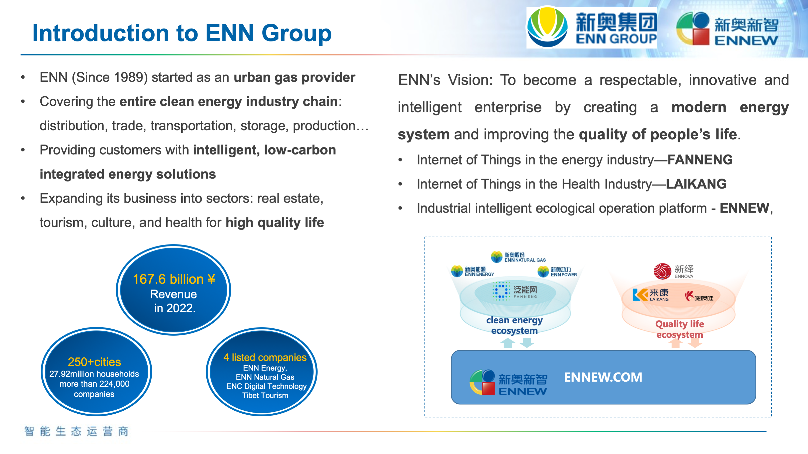
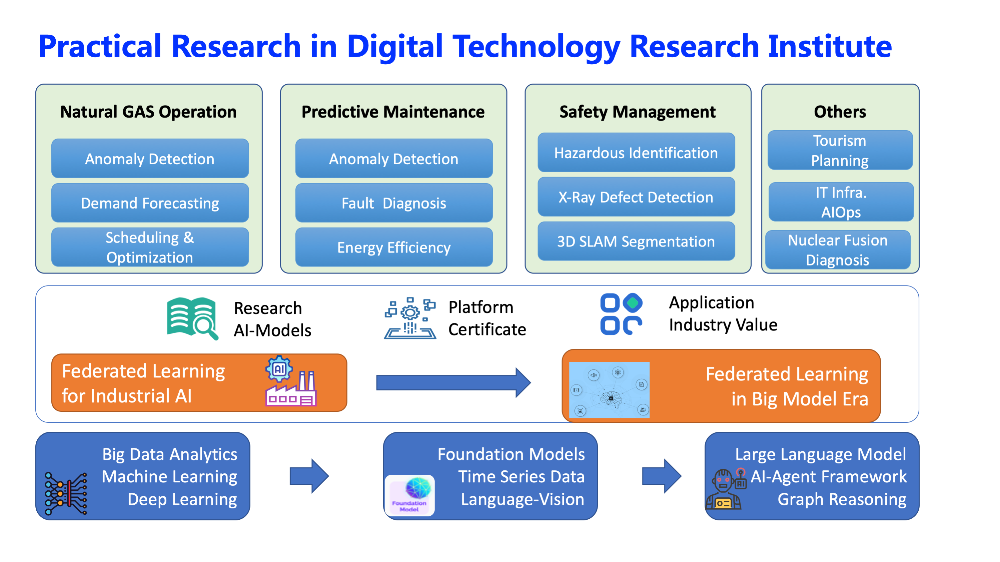
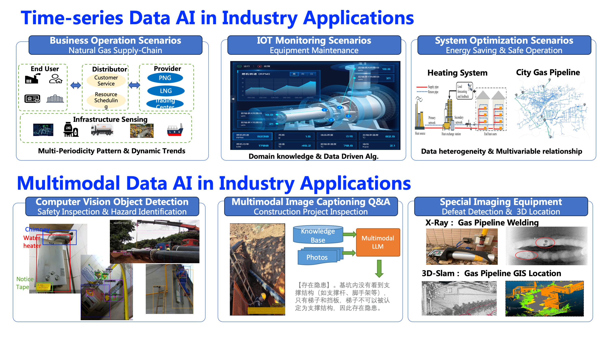
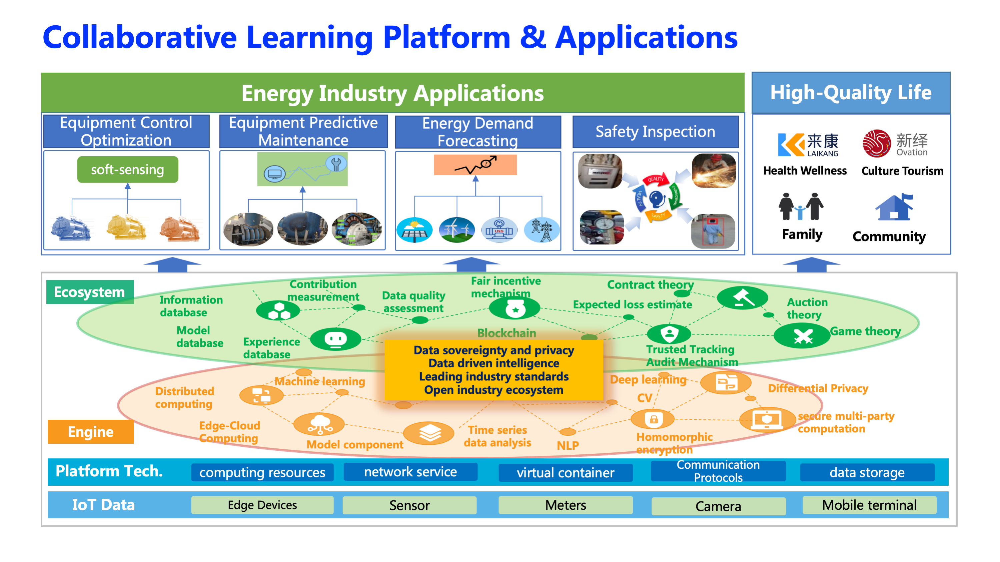
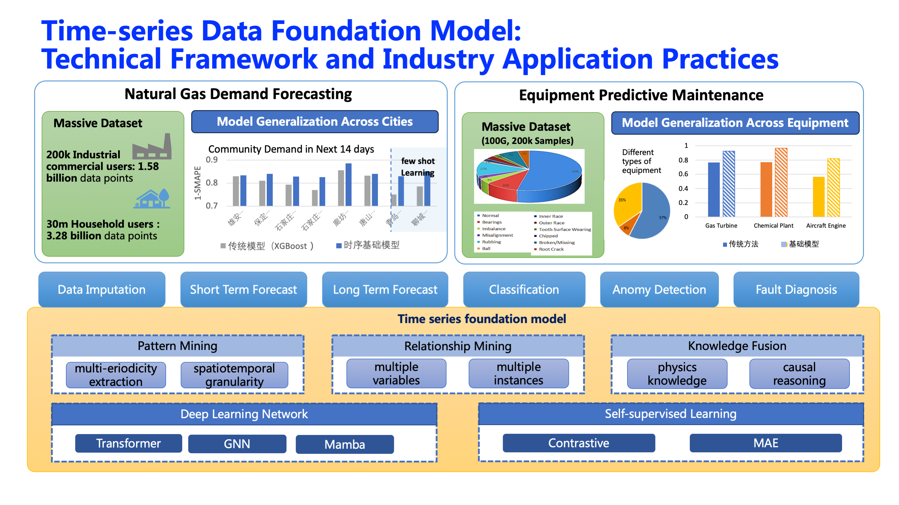
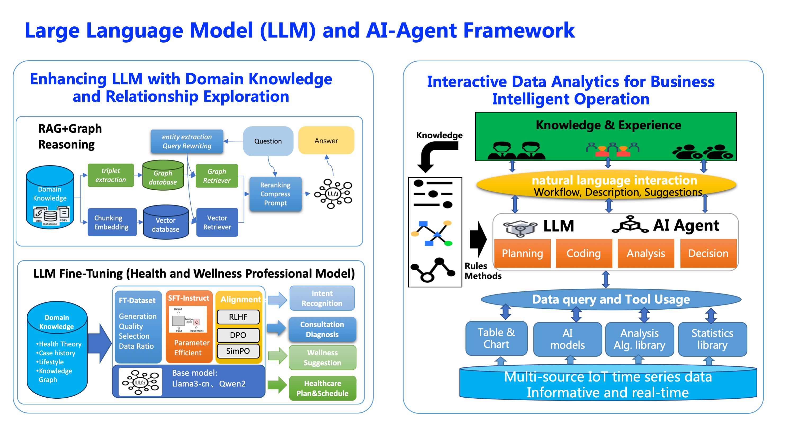
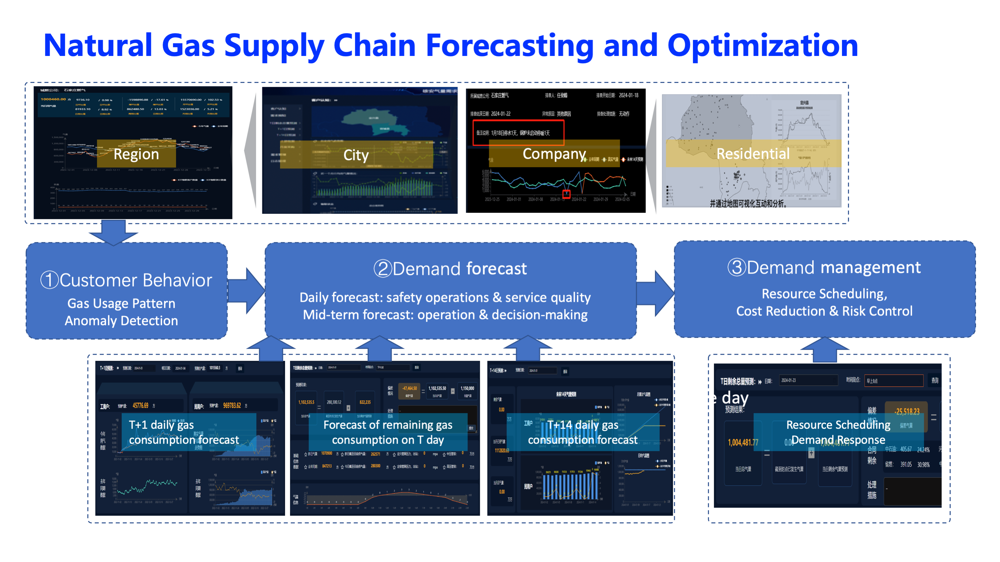
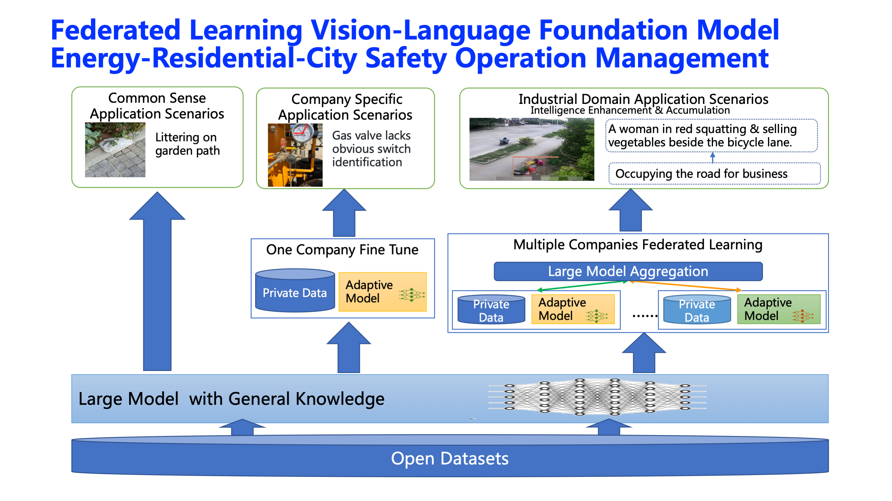
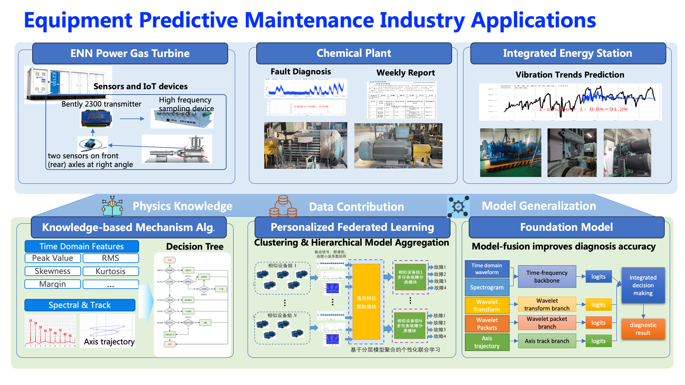
Led a team of 15 researchers and engineers, and supervised several Ph.D and internship students. Played the role as PI and Co-PI for several impactful research programmes and industry projects, establishing close relations with universities, government agencies and industrial companies, to work together as an avid collaborator on urban computing and transportation, smart manufacturing, precision medicine, green data center, and etc. Published dozens of high-quality papers on ACM/IEEE Transactions, Journals, and Conferences, and also serves as track/workshop chair of several reputable international conferences.
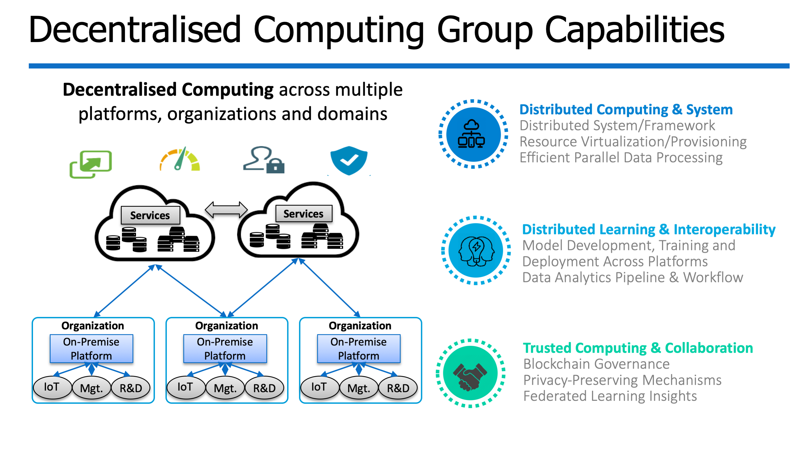
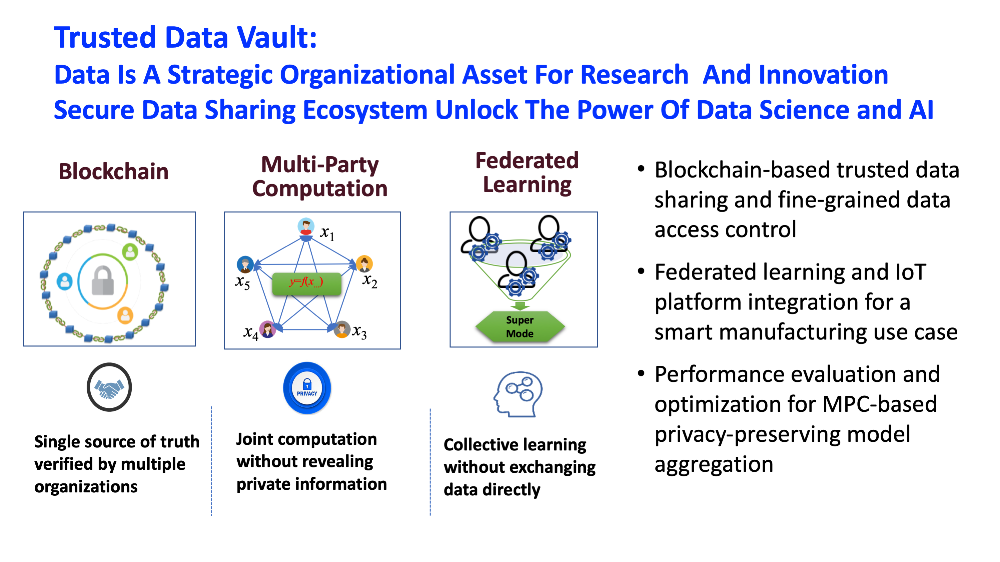
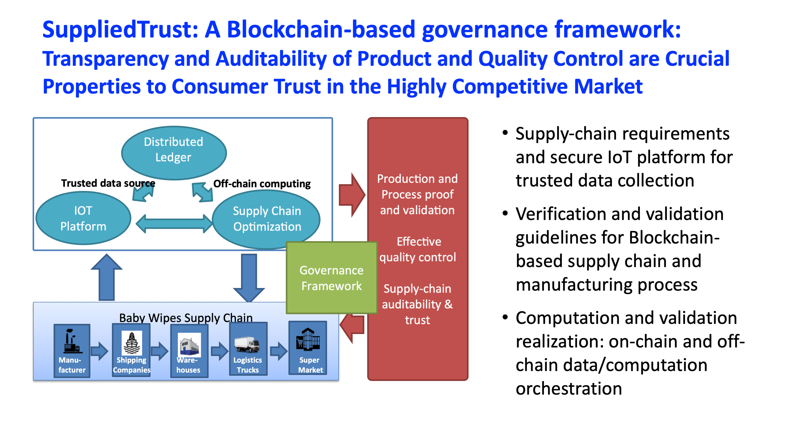
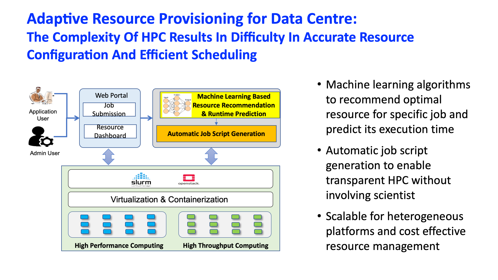
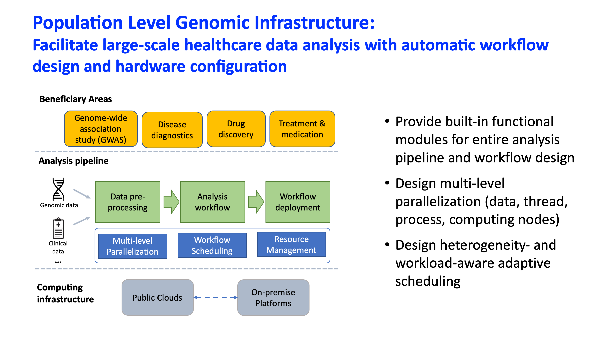
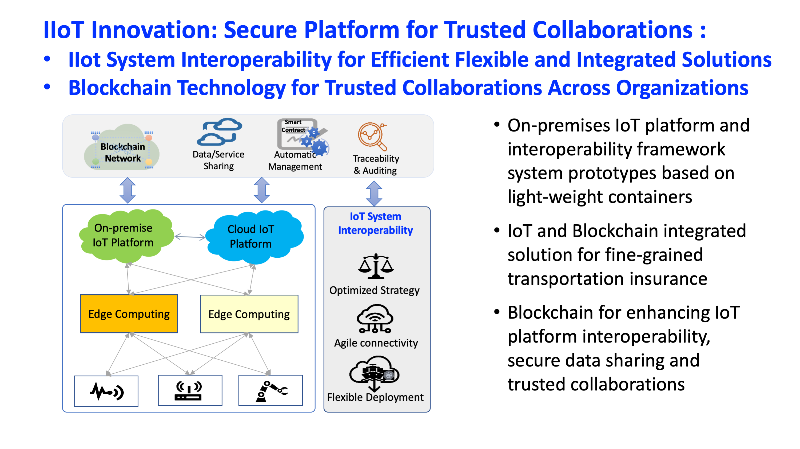
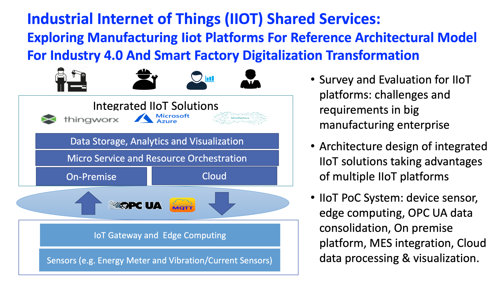
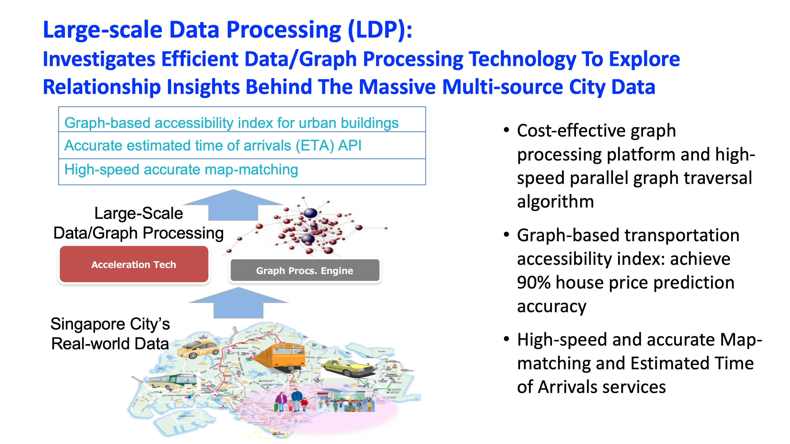
Dr. Li completed his Ph.D. at NTU's School of Computer Engineering (2006–2012), followed by a Research Associate appointment at the Parallel and Distributed Computing Centre, NTU (08/2010–06/2012), working on efficient and fault-tolerant HLA-based distributed simulation and its applications.
Efficient and Fault Tolerant HLA based Simulation
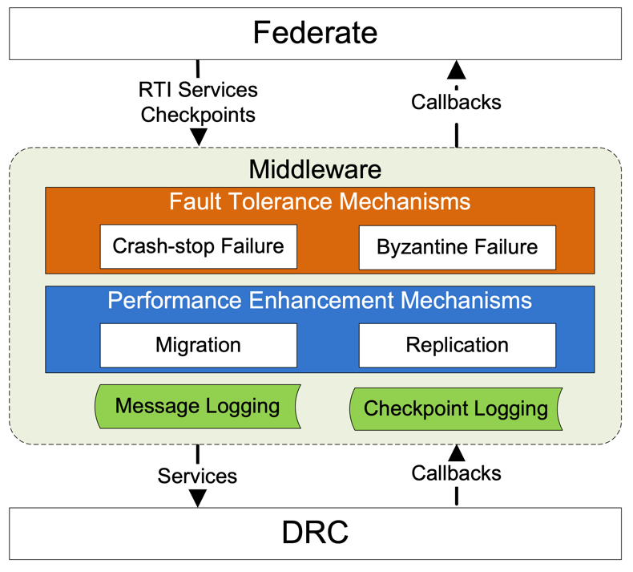